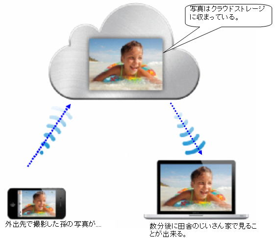
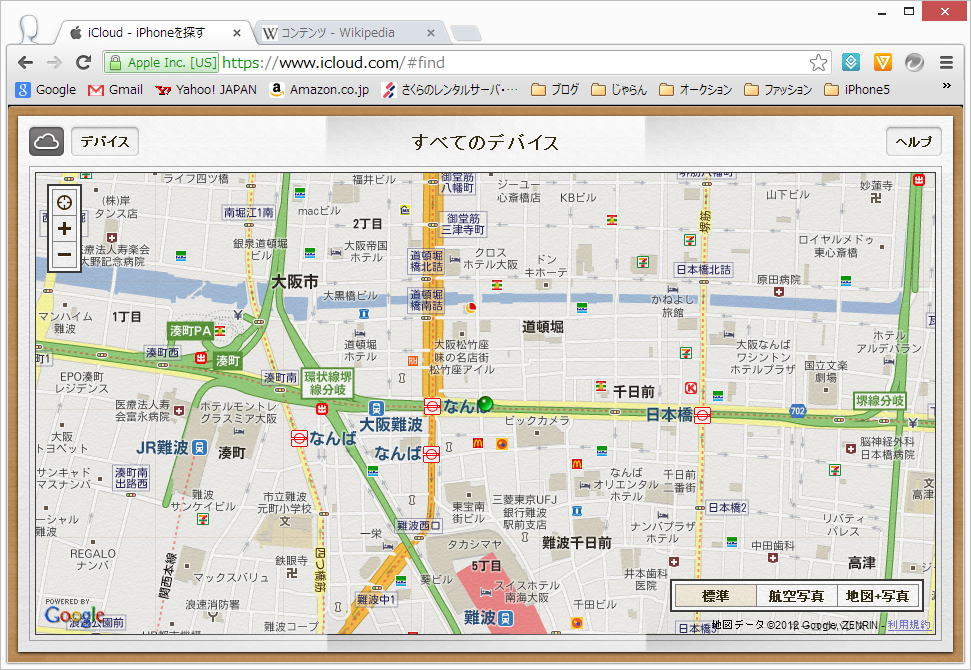
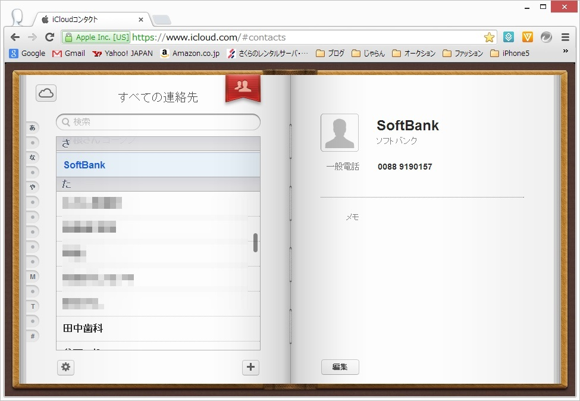
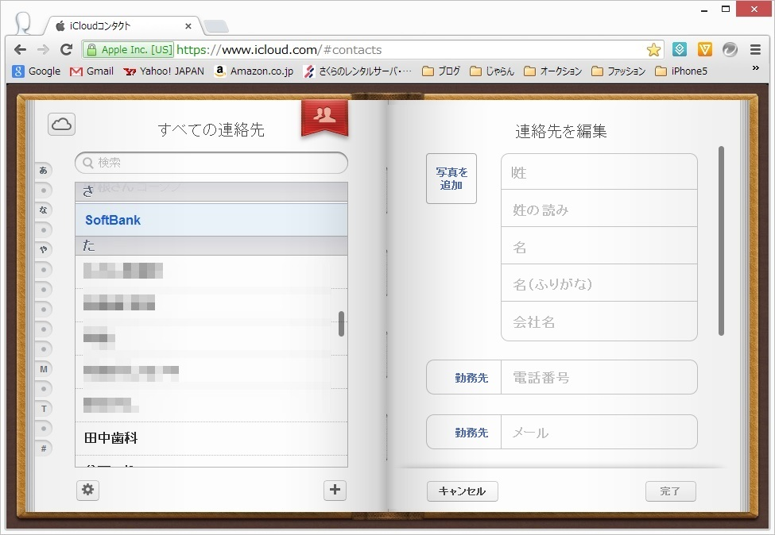
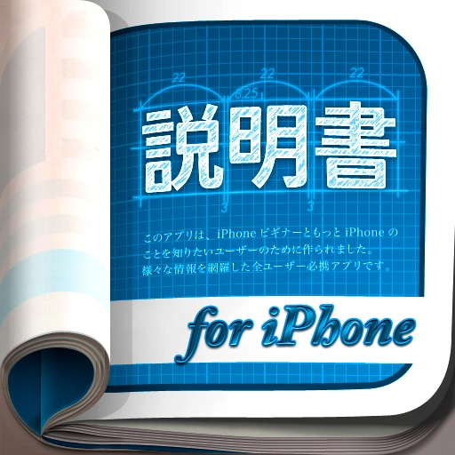
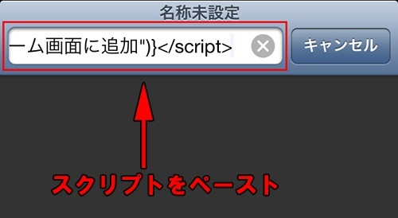
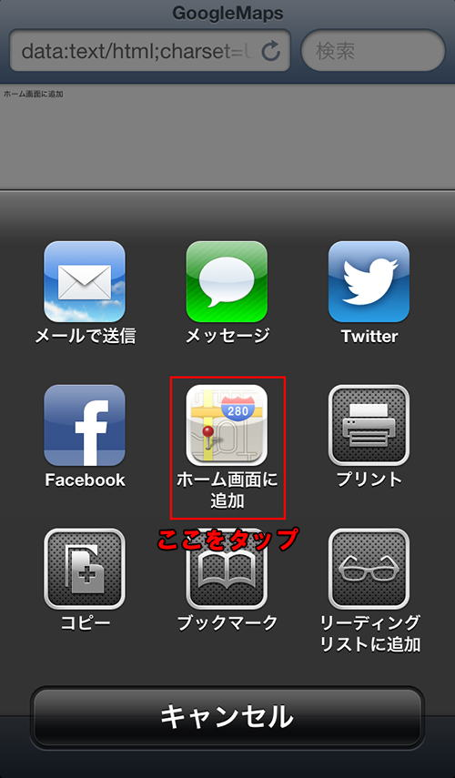
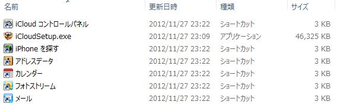
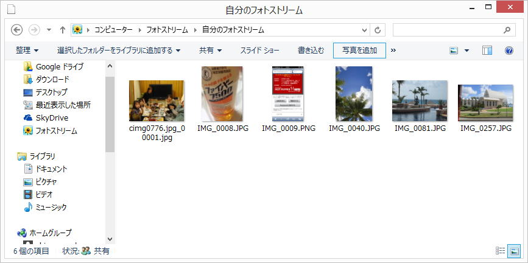

| TOP | weblog | TIPS | Works | リンク | 戻る |
| iPhone5 TIPS(1) (1)「i.softbank.jp」ドメインのメールアドレス変更 (2)「i.softbank.jp」ドメインメールサーバーの情報 (3)iCloudってどーよ？ (4)iCloudのプライバシー (6)プッシュ機能とアプリの振る舞い (7)Googleマップとストリートビューを「アプリ」的に使う Googleマップのアプリがリリースされましたので意味なしです。 (8)iCloudで写真の共有するにはショートカットを使わないと転送されません。 (9)iCloudと連携した「電話帳」のグループ機能は「使えねぇ」 (10)iPhone5の液晶ガラス割れに備える、Wrapsol の 耐久性衝撃吸収 保護フィルム は貼り易いです。 (1) 「i.softbank.jp」ドメインのメールアドレスの変更はiPhone5本体からしかできません。 「My Softbank」からはできません。 それと３Gでしか出来ませんのでWi-FiはOFFにします。(Wi-Fiだとシステムエラーになります) -戻る- (2) 「i.softbank.jp」ドメイン・メールサーバーの情報です。 「iCloud」が気に入らない人はお気に入りにのメーラーに設定して使ってください。 注意：以下の情報はソフトバンクが公式に発表したものではありませんので自己責任で利用してください。 IMAPサーバ：imap.softbank.jp SMTPサーバ：smtp.softbank.jp IMAPポート：143（標準どおり） SMTPポート：587（Submissionポート）, non-ssl SMTP認証：あり -戻る- (3) 「icloud」とは何か？、手っ取り早く知るにはAppleのウェブサイトでビデオを見ましょう。 簡単に言うと下図のような事が手間いらずで出来るようになるわけです。 クラウドストレージ、「iPhone5とパソコンとで共有するためのファイルを入れる仮想のディスクスペース」があって、iPhone5とパソコンの両方で共有と同調（同期をとる）事ができます。 クラウドストレージはAppleが５GBまで無償で提供しています。(それ以上は有償らしい)  上図では写真はiPhone5→パソコンの方向ですが、逆もありです。 基本的にはiPhone5とパソコンで同期をとります。 電話帳もicloudで共有できるのですが、iPhone5で追加した電話帳はパソコンでも見れるし、パソコンで追加した電話帳はiPhone5にも追加されます、でも、させないこともできます。 なんで「クラウド(雲)」？ クラウドストレージを実現するためのコンピュータシステムは見えない(意識する必要がない)「雲の中は見れない」から来てるんじゃないですかね？
メール、リマインダー、メモ、Passbookは最初は「オン」にしていたけど後からオフにしたのであります。 「オン」にしてバックアップした内容は消えずに残っています。 手で消さないとだめだろうな？ 写真は通常「C:\Users\ログインユーザー\Pictures\Photo Stream」に入ります。 これまではメールで飛ばすとか、SDカードで渡していたので、これは大変便利です。 下図は「iPhone５を探す」で表示された地図です、ちゃんと合ってますよ。  コンタクト（電話帳の事） iPhone5の電話帳がすべてアップロードされてました。  パソコンで追加した電話帳はiPhone5にも勝手に追加されるはずです。  (4) 子供には専用のパソコンを与えているけど、夫婦で１台ずつパソコン持っている人そんなに多くないはず。 でもiCloudつかうとお互いにメールの内容とか見れちゃうわけです。 そりゃ、パスワードをお互い秘密にしておけば互いに見ることはできないだろうけど、大抵はダンナがパソコンのお世話をするのでパスワードを聞かないとメンテ出来ない。 ですからiCloudは「電話帳」のバックアップと写真のバックアップ＆パソコンへのダウンロードとして使う程度でしょうかねぇ？ (5) iOS6の電話帳には「グループ」機能はありません、これは確かなようです。 iCloudと連携すると出来るみたいで、方法は「iPhoneの説明書」アプリに書かれているようです。 実験してから結果を報告します。  iPhoneの説明書 結果報告です。 アプリのダウンロードはかなり時間がかかります、１０分以上。 iCloud、iPhone5とも機能、使い勝手とも悪く「グループ」機能は使いもんになりません。 -戻る- (6) プッシュ機能とアプリの振る舞い プッシュ通知とはアップルが設置した専用サーバー（Apple Push Notification Service、以下APNS）へ信号を送ることで、iPhoneなど対応デバイスへほぼリアルタイムに何らかのデータを送信できる機能を言います。 対象のiOSアプリが起動していないときやiOSデバイスがスリープ状態のときでもアプリを起動することが出来ます。 その通知方法は3種類あり、どれに対応するかはアプリにより異なる。 「テキスト」−画面にダイアログが現われ文字で情報を知らせるもの。 「バッジ」−アプリアイコンの右上に赤丸を表示し数字や記号で知らせるもの。 「サウンド」−通知を受けた瞬間に音を出すもの。 これらはアプリを初めて起動したときに許可することで有効となり、以降は「設定」の「通知」から各項目をオン／オフできます。 アップルは開発者に対しアプリの審査という形でプッシュ通知の利用範囲を制限しています。(2012年8月24日時点） 広告は配信できず、課金にも利用出来ません。 個人情報や重要情報は扱えないうえ、起動後最初にユーザーの同意を得る必要があります。 Androidとは異なり制約が多く、結果としてユーザーには“スパム・プッシュ通知”が届かない仕組です。 とはいえ、ニーズの高さからして今後は緩和方針に転じないとも限りません。 Androidの状況は決して対岸の火事ではないのであります。 ＊利用中のNEXUS7では、今のところウザったいことにはなってませんが、ウェブのgmailには広告がバンバン入ります。 -戻る- (7) アップル製地図は相当クオリティの低い様で、あるはずの道がなかったり、駅の場所が違っていたり施設名が異なっていたり、謎の地名が表記されていたりと。どうにかして『Googleマップ』を使いたいと言う人は『Safari』なりのブラウザを起動して「Googleマップ」と検索すればブラウザベースで『Googleマップ』も利用するしかないのかなと思って調べてみたらあ。ありました。 邪魔なブラウジングメニューを消してマップ、ストリートビューをフルスクリーンで利用できる方法です。 Googleマップを「アプリ」的に使う方法 次のスクリプトをクリップボードにコピー（iOSでもクリップボード？）
  ストリートビューのスクリプト。 上記の「Googleマップ」と同じ要領で出来ます。
(8) iCloudを使うとiPhone5とWindowsパソコンの間で写真の共有が出来る事は上記の「 (3)iCloudってどーよ？」で書きました。 iCloudコントロールパネルをいじっていると以下のようなダイアログが表示されるところから写真を共有するためのフォルダは「C:\Users\shinerecord\Pictures\Photo Stream\My Photo Stream」です。 確かにiPhone5の写真はWi-Fiが接続されてから暫くすると、このフォルダに入ります。 ですからWindows側でこのフォルダに写真を放り込むとiPhone5に転送されると予想したのですが上手く行きません。 ちゃんとiCloudをインストした後に作成される「フォトストリーム」の「写真を追加」で取り込まないとダメです。   勝手な推測 同期をとるのは以下のバックグラウンドプロセス。  C:\Program Files (x86)\Common Files\Apple\Apple Application Support\APSDaemon.exe C:\Program Files (x86)\Common Files\Apple\Internet Services\ApplePhotoStreams.exe -戻る- (9)i Cloudと連携した「電話帳」のグループ機能は「使えねぇ」です。 ・グループの表示順が変更できない。iCloudで登録した降順で表示される。 ・iPhone5側のグループ機能が使いにくすぎる。 ・グループと電話帳が別ページになっていて、まずグループを選択（チェック）して、絞り込まれて電話帳が表示さえるという、あきらかにGUIのデザインが悪すぎます。 使うのは止めたほうがいいです。 -戻る- (10) iPhoneを落として液晶がわれてしまった事故でづが「よく耳にする」「聞いたことがない」色々あります。 YouTubeで「iPhone5 drop test」で検索するといっぱいヒットしますが、やはり丸裸のiPhone5ですと通常利用範囲内での落下では、落としどころが悪いと液晶ガラスは割れます。 以下の動画の４分４０秒からiPhone5の液晶割れるシーンが見れます。 絶対に落とすことは分かっているので最低限の自己防衛をしようということで「保護フィルム」を買いました。 (なんか、これまでの記事見るとiPhone5は自分のものみたいに書いているけど、あくまでも「かみさん」のものです) TBSのリンカーンで「Buff ウルトラ衝撃吸収プロテクター」なる保護フィルムが紹介されていて店頭ではバカ売れみたいです。 過激なビデオを見る限り効果はホンモノだと思うのですが、amazonで見てみるとレビューの件数の少なさと評価の低さが気になりこいつは止めにして 「Wrapsol ULTRA Screen Protector System - 耐久性衝撃吸収 保護フィルム for iPhone 5」 にしました。 全面・裏面・側面タイプで￥２,７０９、全面だけだと￥１,８００です。 過激なビデオがないので効果ははっきりしませんが、張るのもとっても簡単で綺麗です。 関連記事「iPhoneが割れた時に知ってほしい3つのこと」「iphone5 液晶割れ」、ああ、悲惨。 -戻る- |